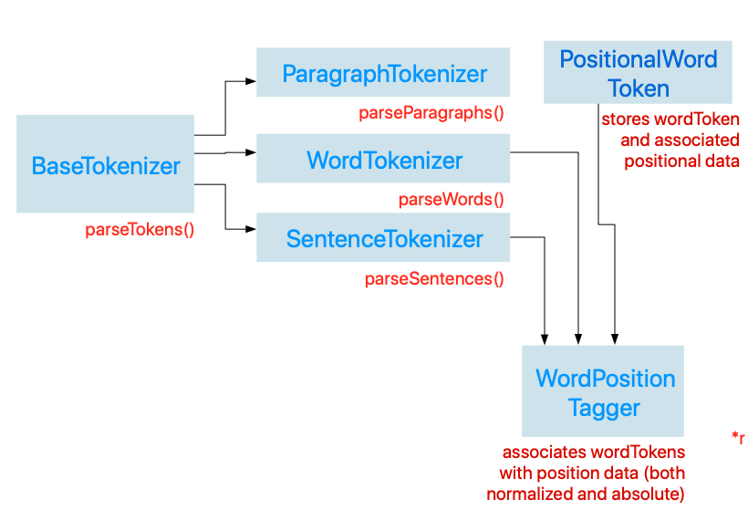

Here is our plan for designing a set of wrapper classes that abstract away the details of using the NLTokenizer class:
Before we begin, we are going to define some data models. Each of our data models will conform to a protocol Tokenizable, which has a single gettable property wordToken, which is a String type.
protocol Tokenizable:Hashable{
var wordToken: String {get}
}
We are also going to make the String class itself conform to the Tokenizable protocol. So any String will simply return itself in order to conform to the protocol:
extension String: Tokenizable{
var wordToken: String {
get {
return self
}
set(newValue) {
self = newValue
}
}
}
Most of the models that we define will associate words with other data relevant to the word, such as word position, part of speech, phonetic transcription, lemmas, and so forth. We are going to define our models as structs so that they have value-type semantics, which means they won't be able to inherit from a common subclass. Using the protocol is also beneficial because it allows us to package different kinds of word data into different structs all the while allowing them to constrain type parameters on some of the classes that we will define later.
The next data type that we define will be a struct named TaggedWord, which has tag property that stores the word's part of speech.
struct TaggedWord: Tokenizable, CustomStringConvertible,Hashable{
var wordToken: String{
return self.word
}
var word: String
var tag: NLTag
init(word: String, tag: NLTag) {
self.word = word
self.tag = tag
}
var description: String{
return "\(word)/\(tag.rawValue)"
}
}
This model will also have some convenience methods that can be used for more easy filtering later on. These methods will be used to determine whether or not the word is a specific part of speech:
func isPreposition() -> Bool{
return tag == .preposition
}
func isDeterminer() -> Bool{
return tag == .determiner
}
func isAdverb() -> Bool{
return tag == .adverb
}
func isAdjective() -> Bool{
return tag == .adjective
}
func isConjunction() -> Bool{
return tag == .conjunction
}
func isVerb() -> Bool{
return tag == .verb
}
func isProperNoun() -> Bool{
let properNounTagSet: Set = [.personalName,.organizationName,.placeName]
return properNounTagSet.contains(self.tag)
}
func isNoun() -> Bool{
return tag == .noun
}
func isGeneralNoun() -> Bool{
return isNoun() || isProperNoun()
}
Now we are ready to start creating our Tagger classes. Just as we defined a base class for our Tokenizer classes, so will we also define a base class BaseTagger that will provide core functionality and state for derived Tagger classes:
class BaseWordTagger{
init(sampleText: String) {
self.text = sampleText
}
var text: String
var fullTextRange: Range<String.Index>{
return text.startIndex..<text.endIndex
}
private var availableTagSchemes: [NLTagScheme]{
return [.lexicalClass,
.lemma,
.nameType,
.nameTypeOrLexicalClass,
.tokenType,
.language]
}
var tokenUnit: NLTokenUnit{
return NLTokenUnit.word
}
var options: NLTagger.Options{
return [.omitWhitespace,.omitPunctuation]
}
lazy var tagger:NLTagger = {
let tagger = NLTagger(tagSchemes: self.availableTagSchemes)
tagger.string = self.text
return tagger
}()
}
Just lke before, we define some computer properties that help us initialize a default tagger with the behavior we need.
Now let's go ahead and define a derived class LCWordTagger, where 'LC' stands for 'Lexical Category.' This tagger will be responsible for assigning part of speech tags for each word in a given sample of text.
class LCWordTagger:BaseWordTagger{
}
Inside the class definition, we want to define some functions that will provide the basic functionality for this class. The first will be called parseWordsTaggedWithLexicalClass(withTagTypes:usingDefaultTag), which allows us to select the kind of tags that we want to use when tagging the words in our sample text. For example, we can specify only nouns, or nouns,verbs,and adjectives. We can also specify all the lexical categories available. If the tagger is unable to tag a specific word, we can specify a default tag that can be used as a placeholder for words whose tags are ambiguous or indeterminate for the tagger.
/*
Returns an array of tagged words whose tags belong to the specified set of tag types provided
in the tagTypes parameter
*/
func parseWordsTaggedWithLexicalClass(withTagTypes tagTypes: [NLTag], usingDefaultTag defaultTag: NLTag?) -> [TaggedWord]{
var taggedWords = [TaggedWord]()
self.tagger.enumerateTags(in: self.fullTextRange, unit: self.tokenUnit, scheme: .lexicalClass, options:self.options){
tag, tokenRange in
if let tag = tag{
if(tagTypes.contains(tag)){
let word = String(self.text[tokenRange])
taggedWords.append((TaggedWord(word: word, tag: tag)))
} else if let word = self.text.getSubString(fromRange: tokenRange), let defaultTag = defaultTag{
taggedWords.append((TaggedWord(word: word, tag: defaultTag)))
}
}
return true
}
return taggedWords
}
Inside the above method, we used a convenience method that we defined inside of a String extension, which I show below: